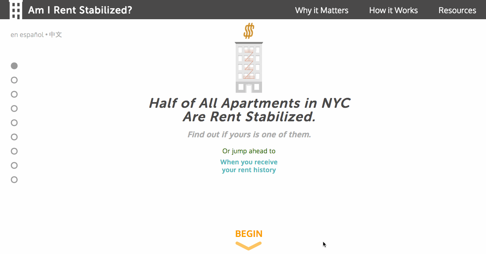
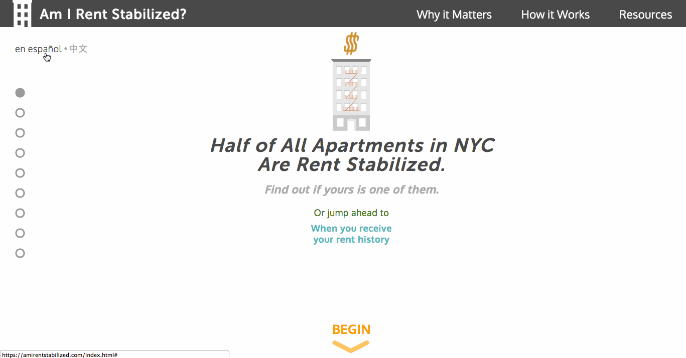

Maps, Open Data, & the Web
Chris Henrick
USF Urban Design, 10/6/2016
Topics
My Work and how it relates to:
- Open Data
- Civic Tech
- Housing & Social Justice
- Narrative & Exploration
- Tools of the Trade
About Me...
Art School (drop out) => Bike Messenger => Cartographer + GIS Speacilist => Geo-Web Developer
WORK
Am I Rent Stabilized?
Am I Rent Stabilized?
The Northwest Bushwick Community Map

Greenpoint Williamsburg Toxicity Map

The Displacement Alert Project Map

Landscapes of Profit

Tools of the Trade
- Javascript Javascript Javascript!!!
- Map Tiles
- GeoJSON
- QGIS
- SQL
- PostGIS
- Leaflet.JS
- CARTO(DB)(.JS)
- MapBox
- D3.JS
- Node.JS
- CSS & Sass
Thank you!
Twitter: @chrislhenrick
Email: chrishenrick [at] gmail
Website: clhenrick.io